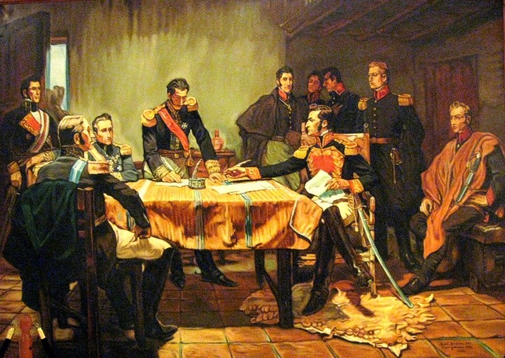
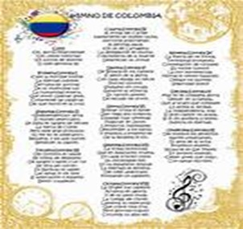

Bibliografía del Proyecto
Regresar a Inicio


❮
❯
BIBLIOGRAFÍA
David Bushnell: Ensayos de Historia política de Colombia siglos XIX y XX
Artículo Scielo - Historia Política de Colombia
Editorial Uniagustiniana - Catálogo histórico
Historia de la Revolución - Archive.org
Tesis Dialnet - Historia de Colombia
UPTC - Libros de Acceso Abierto
Historia de la Independencia de Colombia
Himno Nacional de Colombia - Letra oficial
Cultura Genial - Himno de Colombia
Volver a Inicio
Volver arriba